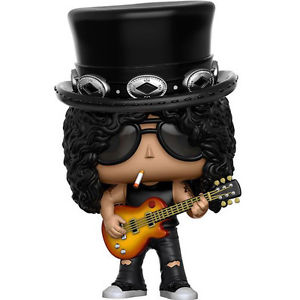

Saul Hudson (born July 23, 1965), better known by his stage name Slash, is an English-American musician and songwriter. He is best known as the lead guitarist of the American hard rock band Guns N' Roses, with whom he achieved worldwide success in the late 1980s and early 1990s. During his later years with Guns N' Roses, Slash formed the side project Slash's Snakepit. After leaving Guns N' Roses in 1996, he co-founded the supergroup Velvet Revolver, which re-established him as a mainstream performer in the mid to late 2000s. Slash has released three solo albums: Slash (2010), featuring an array of guest musicians, and Apocalyptic Love (2012) and World on Fire (2014), recorded with his band, Myles Kennedy and the Conspirators. He returned to Guns N' Roses in 2016.
Slash has received critical acclaim and is considered one of the greatest rock guitarists. Time magazine named him runner-up on their list of "The 10 Best Electric Guitar Players" in 2009, while Rolling Stone placed him at number 65 on their list of "The 100 Greatest Guitarists of All Time" in 2011. Guitar World ranked his guitar solo in "November Rain" number 6 on their list of "The 100 Greatest Guitar Solos" in 2008, and Total Guitar placed his riff in "Sweet Child o' Mine" at number 1 on their list of "The 100 Greatest Riffs" in 2004. In 2010, Gibson Guitar Corporation ranked Slash as number 34 on their "Top 50 Guitarists of All Time", while their readers landed him number 9 on Gibson's "Top 25 Guitarists of All Time". In 2012, he was inducted into the Rock and Roll Hall of Fame as a member of Guns N' Roses' classic line-up.
© 2015 vague
